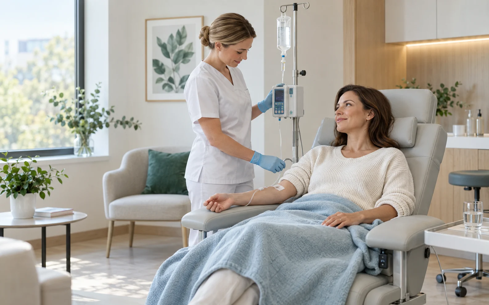

Детокс
Программа поддержки восстановительных процессов при повышенной нагрузке на организм.
Обсудить с врачомНовое направление
Инфузионные программы для поддержки организма, восстановления и хорошего самочувствия. Врач оценивает состояние, противопоказания и подбирает состав индивидуально.

11 программ
Названия помогают сориентироваться в направлениях. Окончательный состав, дозировки и длительность курса назначаются только после медицинской консультации.
Программа поддержки восстановительных процессов при повышенной нагрузке на организм.
Обсудить с врачомНаправление для пациентов, которым врач рекомендует поддержку функции печени и обменных процессов.
Обсудить с врачомДля периодов повышенной утомляемости и интенсивного ритма — после оценки причин состояния.
Обсудить с врачомПрограмма, которую врач может рассмотреть в составе комплексного восстановительного маршрута.
Обсудить с врачомПоддерживающее направление при высоких эмоциональных нагрузках и нарушенном режиме отдыха.
Обсудить с врачомНаправление для периодов интенсивной умственной работы после исключения медицинских причин жалоб.
Обсудить с врачомПрограмма поддержки в период сезонных нагрузок, назначаемая с учетом состояния пациента.
Обсудить с врачомИнфузионное направление в рамках комплексного подхода к самочувствию и внешнему виду.
Обсудить с врачомДля периодов интенсивных тренировок и восстановления — с учетом нагрузок и анализов.
Обсудить с врачомКлассическое направление инфузионной поддержки. Необходимость и состав оценивает врач.
Обсудить с врачомПоддерживающая программа, параметры которой подбираются индивидуально по медицинским показаниям.
Обсудить с врачомСпокойный медицинский маршрут
Расскажите, что вас беспокоит и какого результата вы ожидаете.
Врач собирает анамнез, оценивает противопоказания и при необходимости назначает анализы.
Специалист определяет состав, объем, скорость введения и количество процедур.
Медицинский сотрудник проводит инфузию и наблюдает за самочувствием.
Безопасность важнее обещаний
Мы не предлагаем универсальные составы и не обещаем мгновенный результат. Решение о процедуре принимается с учетом жалоб, анамнеза, сопутствующих состояний и возможных лекарственных взаимодействий.
Частые вопросы
Можно отметить интересующее направление, но окончательное решение принимает врач после консультации. Это нужно, чтобы учесть показания, противопоказания и совместимость компонентов.
Зависит от жалоб, анамнеза и выбранного направления. Перечень исследований, если они нужны, определит врач.
Продолжительность зависит от назначенного раствора, объема и рекомендованной скорости введения. Точное время сообщит специалист после назначения.
Сначала нужна консультация. После нее врач определит, показана ли процедура и какое количество сеансов подходит именно вам.
Запись